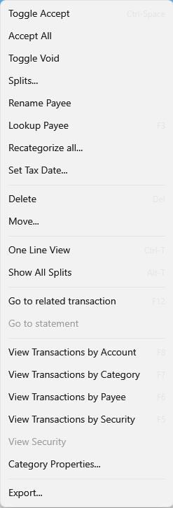

Transactions Menu#
Bank Accounts, Credit Card Accounts and Investment Accounts have the following context menu for handy commands regarding the management of your transactions.

Toggle Accept#
This command is a way to verify that the selected transaction you've imported from your bank is something you recognize and accept. See Unaccepted Report.
Accept All#
Mark all transactions in the current view as "accepted".
Toggle Void#
Mark the selected transaction as void this means it no longer participates in the account balance
or reconciliation. This is handy when tracking a bad check.
Splits...#
Add splits to the selected transaction. See Splits.
Rename Payee#
Rename the payee and optionally setup an automatic rename using Aliasing.
Lookup Payee#
Open your web browser to search for information about this payee.
Recategorize all...#
This is a convenience tool for recategorizing all transactions in the current view. Please use with caution!
Set Tax Date...#
Sometimes a transaction in one year is actually related to the previous year's tax report. This impacts what transactions are included in the [../Reports/TaxReport.md].
Delete#
Delete the selected transaction.
Move...#
Move the selected transaction to a different account, including any Attachments.
One Line View#
Toggle the view between one and three lines per transaction.
Show All Splits#
Toggle the view from hiding all to showing all splits. When hiding splits they are only visible when you press the splits
downarrow or select the Splits... command.
Go to related transaction#
Some transactions like [../Basics/Transfers.md] have a related transaction in another account. This command navigates to the related transaction for the selected transaction if there is one.
Go to statement#
During the [Account Balancing](BalancingAccounts.md] process you can associate a bank statement (usually a pdf) with the transactions included in that statement. This command finds that statement if there is one and opens it.
View Transaction by Acount#
Shows all transactions in the account for the selected transaction.
View Transaction by Category#
Shows all transactions that have the same category as the selected transaction.
View Transaction by Payee#
Shows all transactions that have the same payee as the selected transaction.
View Transaction by Security#
Shows all transactions that have the same security as the selected investment transaction.
View Security#
Navigates to the security view for and finds the security matching the selected investment transaction.
Category Properties#
This is a short cut to the category property dialog for the category defined on the selected transaction.
Export...#
Exports all the transactions in the current view to a .csv or .xml file. You will get the following columns:
| type | Columns | ||||||||
|---|---|---|---|---|---|---|---|---|---|
| investments | Date | Payee | Category | Activity | Symbol | Units | UnitPrice | Amount | Memo |
| other | Account | Date | Payee | Amount | Category | Memo |